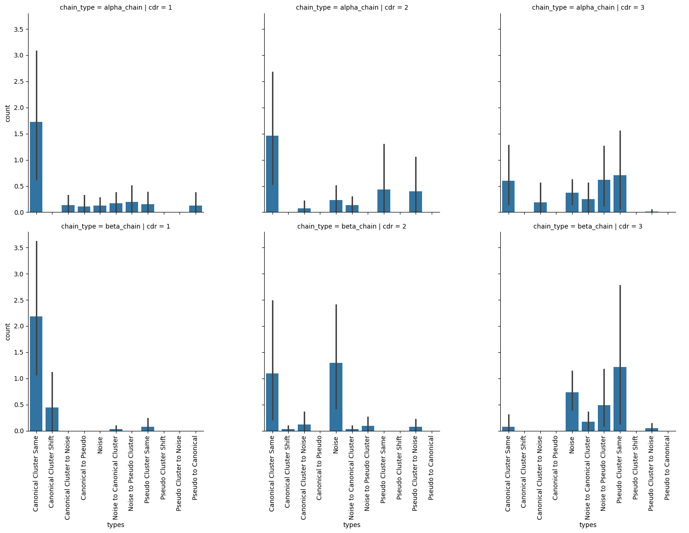

Comparing apo and holo CDR loop clustering
Introduction
In this notebook, we set out to assess whether the CDR loops of TCRs stay in there canonical forms between apo and holo states or if they disrupt them.
[1]:
import itertools
import matplotlib.pyplot as plt
import pandas as pd
import seaborn as sns
[2]:
df = pd.read_csv('../data/processed/stcrdab_clusters.csv')
df
[2]:
| name | cluster | chain_type | cdr | sequence | cluster_type | |
|---|---|---|---|---|---|---|
| 0 | 7zt2_DE | 12 | alpha_chain | 1 | TSGFNG | pseudo |
| 1 | 7zt3_DE | 12 | alpha_chain | 1 | TSGFNG | pseudo |
| 2 | 7zt4_DE | 12 | alpha_chain | 1 | TSGFNG | pseudo |
| 3 | 7zt5_DE | 12 | alpha_chain | 1 | TSGFNG | pseudo |
| 4 | 7zt7_DE | 12 | alpha_chain | 1 | TSGFNG | pseudo |
| ... | ... | ... | ... | ... | ... | ... |
| 4807 | 6miv_CD | 22 | beta_chain | 3 | ASGDEGYTQY | canonical |
| 4808 | 3rtq_CD | 22 | beta_chain | 3 | ASGDEGYTQY | canonical |
| 4809 | 3dxa_NO | noise | beta_chain | 3 | ASRYRDDSYNEQF | NaN |
| 4810 | 1d9k_AB | noise | beta_chain | 3 | ASGGQGRAEQF | NaN |
| 4811 | 4gg6_GH | noise | beta_chain | 3 | ASSVAVSAGTYEQY | NaN |
4812 rows × 6 columns
Compare apo and holo forms of loops
[3]:
apo_holo_summary_df = pd.read_csv('../data/processed/apo-holo-tcr-pmhc-class-I/apo_holo_summary.csv')
apo_holo_summary_df
[3]:
| file_name | pdb_id | structure_type | state | alpha_chain | beta_chain | antigen_chain | mhc_chain1 | mhc_chain2 | cdr_sequences_collated | peptide_sequence | mhc_slug | |
|---|---|---|---|---|---|---|---|---|---|---|---|---|
| 0 | 1ao7_D-E-C-A-B_tcr_pmhc.pdb | 1ao7 | tcr_pmhc | holo | D | E | C | A | B | DRGSQS-IYSNGD-AVTTDSWGKLQ-MNHEY-SVGAGI-ASRPGLA... | LLFGYPVYV | hla_a_02_01 |
| 1 | 1bd2_D-E-C-A-B_tcr_pmhc.pdb | 1bd2 | tcr_pmhc | holo | D | E | C | A | B | NSMFDY-ISSIKDK-AAMEGAQKLV-MNHEY-SVGAGI-ASSYPGG... | LLFGYPVYV | hla_a_02_01 |
| 2 | 1bii_A-B-P_pmhc.pdb | 1bii | pmhc | apo | NaN | NaN | P | A | B | NaN | RGPGRAFVTI | h2_dd |
| 3 | 1ddh_A-B-P_pmhc.pdb | 1ddh | pmhc | apo | NaN | NaN | P | A | B | NaN | RGPGRAFVTI | h2_dd |
| 4 | 1duz_A-B-C_pmhc.pdb | 1duz | pmhc | apo | NaN | NaN | C | A | B | NaN | LLFGYPVYV | hla_a_02_01 |
| ... | ... | ... | ... | ... | ... | ... | ... | ... | ... | ... | ... | ... |
| 353 | 8gon_D-E-C-A-B_tcr_pmhc.pdb | 8gon | tcr_pmhc | holo | D | E | C | A | B | TSESDYY-QEAYKQQN-ASSGNTPLV-SGHNS-FNNNVP-ASTWGR... | NaN | NaN |
| 354 | 8gop_A-B_tcr.pdb | 8gop | tcr | apo | A | B | NaN | NaN | NaN | TSESDYY-QEAYKQQN-ASSGNTPLV-SGHNS-FNNNVP-ASTWGR... | NaN | NaN |
| 355 | 8gvb_A-B-P-H-L_tcr_pmhc.pdb | 8gvb | tcr_pmhc | holo | A | B | P | H | L | YGATPY-YFSGDTLV-AVGFTGGGNKLT-SEHNR-FQNEAQ-ASSD... | RYPLTFGW | hla_a_24_02 |
| 356 | 8gvg_A-B-P-H-L_tcr_pmhc.pdb | 8gvg | tcr_pmhc | holo | A | B | P | H | L | YGATPY-YFSGDTLV-AVGFTGGGNKLT-SEHNR-FQNEAQ-ASSD... | RFPLTFGW | hla_a_24_02 |
| 357 | 8gvi_A-B-P-H-L_tcr_pmhc.pdb | 8gvi | tcr_pmhc | holo | A | B | P | H | L | YGATPY-YFSGDTLV-AVVFTGGGNKLT-SEHNR-FQNEAQ-ASSL... | RYPLTFGW | hla_a_24_02 |
358 rows × 12 columns
[4]:
df[['pdb_id', 'chains']] = df['name'].str.split('_').apply(pd.Series)
df[['alpha_chain', 'beta_chain']] = df['chains'].apply(list).apply(pd.Series)
[5]:
apo_holo_clusters = df.merge(apo_holo_summary_df,
how='inner',
on=['pdb_id', 'alpha_chain', 'beta_chain'])
apo_holo_clusters
[5]:
| name | cluster | chain_type | cdr | sequence | cluster_type | pdb_id | chains | alpha_chain | beta_chain | file_name | structure_type | state | antigen_chain | mhc_chain1 | mhc_chain2 | cdr_sequences_collated | peptide_sequence | mhc_slug | |
|---|---|---|---|---|---|---|---|---|---|---|---|---|---|---|---|---|---|---|---|
| 0 | 8gom_DE | 4 | alpha_chain | 1 | TSESDYY | canonical | 8gom | DE | D | E | 8gom_D-E-C-A-B_tcr_pmhc.pdb | tcr_pmhc | holo | C | A | B | TSESDYY-QEAYKQQN-ASSGNTPLV-SGHNS-FNNNVP-ASTWGR... | NaN | NaN |
| 1 | 8gom_DE | 4 | beta_chain | 1 | SGHNS | canonical | 8gom | DE | D | E | 8gom_D-E-C-A-B_tcr_pmhc.pdb | tcr_pmhc | holo | C | A | B | TSESDYY-QEAYKQQN-ASSGNTPLV-SGHNS-FNNNVP-ASTWGR... | NaN | NaN |
| 2 | 8gom_DE | 3 | alpha_chain | 2 | QEAYKQQN | canonical | 8gom | DE | D | E | 8gom_D-E-C-A-B_tcr_pmhc.pdb | tcr_pmhc | holo | C | A | B | TSESDYY-QEAYKQQN-ASSGNTPLV-SGHNS-FNNNVP-ASTWGR... | NaN | NaN |
| 3 | 8gom_DE | 2 | beta_chain | 2 | FNNNVP | canonical | 8gom | DE | D | E | 8gom_D-E-C-A-B_tcr_pmhc.pdb | tcr_pmhc | holo | C | A | B | TSESDYY-QEAYKQQN-ASSGNTPLV-SGHNS-FNNNVP-ASTWGR... | NaN | NaN |
| 4 | 8gom_DE | noise | alpha_chain | 3 | ASSGNTPLV | NaN | 8gom | DE | D | E | 8gom_D-E-C-A-B_tcr_pmhc.pdb | tcr_pmhc | holo | C | A | B | TSESDYY-QEAYKQQN-ASSGNTPLV-SGHNS-FNNNVP-ASTWGR... | NaN | NaN |
| ... | ... | ... | ... | ... | ... | ... | ... | ... | ... | ... | ... | ... | ... | ... | ... | ... | ... | ... | ... |
| 1189 | 3dxa_NO | 4 | beta_chain | 1 | SEHNR | canonical | 3dxa | NO | N | O | 3dxa_N-O-M-K-L_tcr_pmhc.pdb | tcr_pmhc | holo | M | K | L | TISGNEY-GLKNN-IVWGGYQKVT-SEHNR-FQNEAQ-ASRYRDDS... | NaN | NaN |
| 1190 | 3dxa_NO | noise | alpha_chain | 2 | GLKNN | NaN | 3dxa | NO | N | O | 3dxa_N-O-M-K-L_tcr_pmhc.pdb | tcr_pmhc | holo | M | K | L | TISGNEY-GLKNN-IVWGGYQKVT-SEHNR-FQNEAQ-ASRYRDDS... | NaN | NaN |
| 1191 | 3dxa_NO | 2 | beta_chain | 2 | FQNEAQ | canonical | 3dxa | NO | N | O | 3dxa_N-O-M-K-L_tcr_pmhc.pdb | tcr_pmhc | holo | M | K | L | TISGNEY-GLKNN-IVWGGYQKVT-SEHNR-FQNEAQ-ASRYRDDS... | NaN | NaN |
| 1192 | 3dxa_NO | 6 | alpha_chain | 3 | IVWGGYQKVT | canonical | 3dxa | NO | N | O | 3dxa_N-O-M-K-L_tcr_pmhc.pdb | tcr_pmhc | holo | M | K | L | TISGNEY-GLKNN-IVWGGYQKVT-SEHNR-FQNEAQ-ASRYRDDS... | NaN | NaN |
| 1193 | 3dxa_NO | noise | beta_chain | 3 | ASRYRDDSYNEQF | NaN | 3dxa | NO | N | O | 3dxa_N-O-M-K-L_tcr_pmhc.pdb | tcr_pmhc | holo | M | K | L | TISGNEY-GLKNN-IVWGGYQKVT-SEHNR-FQNEAQ-ASRYRDDS... | NaN | NaN |
1194 rows × 19 columns
[6]:
def collate_clusters(group):
apo_clusters = sorted(group.query("state == 'apo'")['cluster'].tolist())
holo_clusters = sorted(group.query("state == 'holo'")['cluster'].tolist())
return pd.Series({'apo_clusters': apo_clusters, 'holo_clusters': holo_clusters})
apo_holo_clusters_agg = apo_holo_clusters.groupby(['cdr_sequences_collated',
'chain_type',
'cdr']).apply(collate_clusters).reset_index()
apo_holo_clusters_agg
[6]:
| cdr_sequences_collated | chain_type | cdr | apo_clusters | holo_clusters | |
|---|---|---|---|---|---|
| 0 | ATGYPS-ATKADDK-ALSDPVNDMR-SGHAT-FQNNGV-ASSLRGR... | alpha_chain | 1 | [13] | [noise, noise] |
| 1 | ATGYPS-ATKADDK-ALSDPVNDMR-SGHAT-FQNNGV-ASSLRGR... | alpha_chain | 2 | [noise] | [noise, noise] |
| 2 | ATGYPS-ATKADDK-ALSDPVNDMR-SGHAT-FQNNGV-ASSLRGR... | alpha_chain | 3 | [noise] | [noise, noise] |
| 3 | ATGYPS-ATKADDK-ALSDPVNDMR-SGHAT-FQNNGV-ASSLRGR... | beta_chain | 1 | [4] | [4, 4] |
| 4 | ATGYPS-ATKADDK-ALSDPVNDMR-SGHAT-FQNNGV-ASSLRGR... | beta_chain | 2 | [2] | [2, 2] |
| ... | ... | ... | ... | ... | ... |
| 385 | YSGSPE-HISR-ALSGFNNAGNMLT-SGHAT-FQNNGV-ASSLGGA... | alpha_chain | 2 | [noise] | [noise] |
| 386 | YSGSPE-HISR-ALSGFNNAGNMLT-SGHAT-FQNNGV-ASSLGGA... | alpha_chain | 3 | [noise] | [2] |
| 387 | YSGSPE-HISR-ALSGFNNAGNMLT-SGHAT-FQNNGV-ASSLGGA... | beta_chain | 1 | [4] | [4] |
| 388 | YSGSPE-HISR-ALSGFNNAGNMLT-SGHAT-FQNNGV-ASSLGGA... | beta_chain | 2 | [2] | [2] |
| 389 | YSGSPE-HISR-ALSGFNNAGNMLT-SGHAT-FQNNGV-ASSLGGA... | beta_chain | 3 | [noise] | [noise] |
390 rows × 5 columns
[7]:
cluster_types = (df[['chain_type', 'cdr', 'cluster', 'cluster_type']].drop_duplicates()
.set_index(['chain_type', 'cdr', 'cluster'])
['cluster_type'])
[8]:
def classify_movement(chain_type: str,
cdr: str,
apo_clusters: list[str],
holo_clusters: list[str],
cluster_types: pd.Series) -> pd.Series:
types = {
'Noise': 0,
'Noise to Canonical Cluster': 0,
'Noise to Pseudo Cluster': 0,
'Canonical Cluster to Noise': 0,
'Pseudo Cluster to Noise': 0,
'Canonical Cluster Shift': 0,
'Pseudo Cluster Shift': 0,
'Canonical to Pseudo': 0,
'Pseudo to Canonical': 0,
'Canonical Cluster Same': 0,
'Pseudo Cluster Same': 0,
}
for apo_clust, holo_clust in itertools.product(apo_clusters, holo_clusters):
if apo_clust == 'noise' and holo_clust == 'noise':
types['Noise'] += 1
elif apo_clust == 'noise' and holo_clust != 'noise':
if cluster_types.loc[chain_type, cdr, holo_clust] == 'canonical':
types['Noise to Canonical Cluster'] += 1
else:
types['Noise to Pseudo Cluster'] += 1
elif apo_clust != 'noise' and holo_clust == 'noise':
if cluster_types.loc[chain_type, cdr, apo_clust] == 'canonical':
types['Canonical Cluster to Noise'] += 1
else:
types['Pseudo Cluster to Noise'] += 1
elif apo_clust != holo_clust:
if (cluster_types.loc[chain_type, cdr, apo_clust]
== cluster_types.loc[chain_type, cdr, holo_clust]
== 'canonical'):
types['Canonical Cluster Shift'] += 1
elif (cluster_types.loc[chain_type, cdr, apo_clust] == 'canonical'
and cluster_types.loc[chain_type, cdr, holo_clust] == 'pseudo'):
types['Canonical to Pseudo'] += 1
else:
types['Pseudo to Canonical'] += 1
elif apo_clust == holo_clust:
if cluster_types.loc[chain_type, cdr, apo_clust] == 'canonical':
types['Canonical Cluster Same'] += 1
else:
types['Pseudo Cluster Same'] += 1
return pd.Series(types)
apo_holo_clusters_agg = apo_holo_clusters_agg.join(apo_holo_clusters_agg.apply(
lambda row: classify_movement(row.chain_type, row.cdr, row.apo_clusters, row.holo_clusters, cluster_types), axis=1
))
# Wide to long
apo_holo_clusters_agg = apo_holo_clusters_agg.melt(id_vars=['cdr_sequences_collated', 'chain_type', 'cdr'],
value_vars=['Noise',
'Noise to Canonical Cluster',
'Noise to Pseudo Cluster',
'Canonical Cluster to Noise',
'Pseudo Cluster to Noise',
'Canonical Cluster Shift',
'Pseudo Cluster Shift',
'Canonical to Pseudo',
'Pseudo to Canonical',
'Canonical Cluster Same',
'Pseudo Cluster Same'],
var_name='types', value_name='count')
# Normalize for differeing group sizes
apo_holo_clusters_agg = apo_holo_clusters_agg.groupby(
['cdr_sequences_collated', 'chain_type', 'cdr', 'types'],
)['count'].median().reset_index()
apo_holo_clusters_agg
[8]:
| cdr_sequences_collated | chain_type | cdr | types | count | |
|---|---|---|---|---|---|
| 0 | ATGYPS-ATKADDK-ALSDPVNDMR-SGHAT-FQNNGV-ASSLRGR... | alpha_chain | 1 | Canonical Cluster Same | 0.0 |
| 1 | ATGYPS-ATKADDK-ALSDPVNDMR-SGHAT-FQNNGV-ASSLRGR... | alpha_chain | 1 | Canonical Cluster Shift | 0.0 |
| 2 | ATGYPS-ATKADDK-ALSDPVNDMR-SGHAT-FQNNGV-ASSLRGR... | alpha_chain | 1 | Canonical Cluster to Noise | 2.0 |
| 3 | ATGYPS-ATKADDK-ALSDPVNDMR-SGHAT-FQNNGV-ASSLRGR... | alpha_chain | 1 | Canonical to Pseudo | 0.0 |
| 4 | ATGYPS-ATKADDK-ALSDPVNDMR-SGHAT-FQNNGV-ASSLRGR... | alpha_chain | 1 | Noise | 0.0 |
| ... | ... | ... | ... | ... | ... |
| 4285 | YSGSPE-HISR-ALSGFNNAGNMLT-SGHAT-FQNNGV-ASSLGGA... | beta_chain | 3 | Noise to Pseudo Cluster | 0.0 |
| 4286 | YSGSPE-HISR-ALSGFNNAGNMLT-SGHAT-FQNNGV-ASSLGGA... | beta_chain | 3 | Pseudo Cluster Same | 0.0 |
| 4287 | YSGSPE-HISR-ALSGFNNAGNMLT-SGHAT-FQNNGV-ASSLGGA... | beta_chain | 3 | Pseudo Cluster Shift | 0.0 |
| 4288 | YSGSPE-HISR-ALSGFNNAGNMLT-SGHAT-FQNNGV-ASSLGGA... | beta_chain | 3 | Pseudo Cluster to Noise | 0.0 |
| 4289 | YSGSPE-HISR-ALSGFNNAGNMLT-SGHAT-FQNNGV-ASSLGGA... | beta_chain | 3 | Pseudo to Canonical | 0.0 |
4290 rows × 5 columns
[9]:
apo_holo_clusters_agg
[9]:
| cdr_sequences_collated | chain_type | cdr | types | count | |
|---|---|---|---|---|---|
| 0 | ATGYPS-ATKADDK-ALSDPVNDMR-SGHAT-FQNNGV-ASSLRGR... | alpha_chain | 1 | Canonical Cluster Same | 0.0 |
| 1 | ATGYPS-ATKADDK-ALSDPVNDMR-SGHAT-FQNNGV-ASSLRGR... | alpha_chain | 1 | Canonical Cluster Shift | 0.0 |
| 2 | ATGYPS-ATKADDK-ALSDPVNDMR-SGHAT-FQNNGV-ASSLRGR... | alpha_chain | 1 | Canonical Cluster to Noise | 2.0 |
| 3 | ATGYPS-ATKADDK-ALSDPVNDMR-SGHAT-FQNNGV-ASSLRGR... | alpha_chain | 1 | Canonical to Pseudo | 0.0 |
| 4 | ATGYPS-ATKADDK-ALSDPVNDMR-SGHAT-FQNNGV-ASSLRGR... | alpha_chain | 1 | Noise | 0.0 |
| ... | ... | ... | ... | ... | ... |
| 4285 | YSGSPE-HISR-ALSGFNNAGNMLT-SGHAT-FQNNGV-ASSLGGA... | beta_chain | 3 | Noise to Pseudo Cluster | 0.0 |
| 4286 | YSGSPE-HISR-ALSGFNNAGNMLT-SGHAT-FQNNGV-ASSLGGA... | beta_chain | 3 | Pseudo Cluster Same | 0.0 |
| 4287 | YSGSPE-HISR-ALSGFNNAGNMLT-SGHAT-FQNNGV-ASSLGGA... | beta_chain | 3 | Pseudo Cluster Shift | 0.0 |
| 4288 | YSGSPE-HISR-ALSGFNNAGNMLT-SGHAT-FQNNGV-ASSLGGA... | beta_chain | 3 | Pseudo Cluster to Noise | 0.0 |
| 4289 | YSGSPE-HISR-ALSGFNNAGNMLT-SGHAT-FQNNGV-ASSLGGA... | beta_chain | 3 | Pseudo to Canonical | 0.0 |
4290 rows × 5 columns
[10]:
g = sns.catplot(apo_holo_clusters_agg.sort_values(['chain_type', 'cdr', 'types']),
row='chain_type', col='cdr',
x='types', y='count',
kind='bar')
for ax in g.axes.flat:
labels = ax.get_xticklabels()
plt.setp(labels, rotation=90)

[11]:
cluster_shift_counts = apo_holo_clusters_agg.groupby(['chain_type', 'cdr', 'types'])['count'].sum().astype(int)
cluster_shift_counts[cluster_shift_counts > 0]
[11]:
chain_type cdr types
alpha_chain 1 Canonical Cluster Same 112
Canonical Cluster to Noise 9
Canonical to Pseudo 7
Noise 8
Noise to Canonical Cluster 11
Noise to Pseudo Cluster 13
Pseudo Cluster Same 10
Pseudo to Canonical 8
2 Canonical Cluster Same 95
Canonical Cluster to Noise 5
Noise 15
Noise to Canonical Cluster 9
Pseudo Cluster Same 28
Pseudo Cluster to Noise 26
3 Canonical Cluster Same 39
Canonical Cluster to Noise 12
Noise 24
Noise to Canonical Cluster 16
Noise to Pseudo Cluster 40
Pseudo Cluster Same 46
Pseudo Cluster to Noise 1
beta_chain 1 Canonical Cluster Same 142
Canonical Cluster Shift 29
Noise to Canonical Cluster 2
Pseudo Cluster Same 5
2 Canonical Cluster Same 71
Canonical Cluster Shift 2
Canonical Cluster to Noise 8
Noise 84
Noise to Canonical Cluster 2
Noise to Pseudo Cluster 6
Pseudo Cluster to Noise 5
3 Canonical Cluster Same 5
Noise 48
Noise to Canonical Cluster 11
Noise to Pseudo Cluster 32
Pseudo Cluster Same 79
Pseudo Cluster to Noise 3
Name: count, dtype: int64
[12]:
export_cluster_shift_counts = cluster_shift_counts.to_frame().reset_index()
export_cluster_shift_counts = export_cluster_shift_counts.rename({'types': 'Movement Type'}, axis='columns')
export_cluster_shift_counts['CDR Type'] = export_cluster_shift_counts.apply(
lambda row: f"CDR{row.cdr}\\text{row.chain_type.split('_')[0]}{{}}",
axis='columns',
)
export_cluster_shift_counts = export_cluster_shift_counts.pivot(index='Movement Type',
columns='CDR Type',
values='count')
export_cluster_shift_counts = export_cluster_shift_counts.sort_values('Movement Type')
export_cluster_shift_counts = export_cluster_shift_counts.replace(0, '-')
export_cluster_shift_counts = export_cluster_shift_counts.sort_index()
export_cluster_shift_counts.columns.name = None
export_cluster_shift_counts = export_cluster_shift_counts.reset_index()
export_cluster_shift_counts
/var/scratch/bmcmaste/1908294/ipykernel_260472/2849749015.py:21: FutureWarning: In future versions `DataFrame.to_latex` is expected to utilise the base implementation of `Styler.to_latex` for formatting and rendering. The arguments signature may therefore change. It is recommended instead to use `DataFrame.style.to_latex` which also contains additional functionality.
fh.write(export_cluster_shift_counts.to_latex(escape=False, index=False))
[12]:
| Movement Type | CDR1\textalpha{} | CDR1\textbeta{} | CDR2\textalpha{} | CDR2\textbeta{} | CDR3\textalpha{} | CDR3\textbeta{} | |
|---|---|---|---|---|---|---|---|
| 0 | Canonical Cluster Same | 112 | 142 | 95 | 71 | 39 | 5 |
| 1 | Canonical Cluster Shift | - | 29 | - | 2 | - | - |
| 2 | Canonical Cluster to Noise | 9 | - | 5 | 8 | 12 | - |
| 3 | Canonical to Pseudo | 7 | - | - | - | - | - |
| 4 | Noise | 8 | - | 15 | 84 | 24 | 48 |
| 5 | Noise to Canonical Cluster | 11 | 2 | 9 | 2 | 16 | 11 |
| 6 | Noise to Pseudo Cluster | 13 | - | - | 6 | 40 | 32 |
| 7 | Pseudo Cluster Same | 10 | 5 | 28 | - | 46 | 79 |
| 8 | Pseudo Cluster Shift | - | - | - | - | - | - |
| 9 | Pseudo Cluster to Noise | - | - | 26 | 5 | 1 | 3 |
| 10 | Pseudo to Canonical | 8 | - | - | - | - | - |
Conclusion
The analysis here shows that for the most part, the CDR-1s and CDR-2s stay in their canonical forms between apo and holo states where as the CDR-3 loops have a variety of modes. As expected, it is more difficult to cluster the CDR-3 loops as they are more structurally diverse.